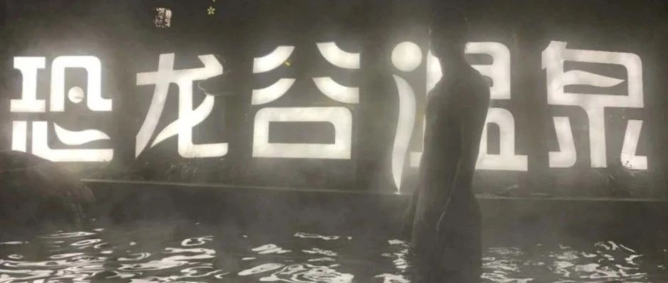

《面》
素未谋面、就汤下面、满面春风、
红光满面、八面玲珑、独当一面、
面不改色、面面相觑、面红耳赤、
面目全非、两面三刀、泪流满面、
洗心革面、面面俱到、春风满面、
面面俱圆、面如傅粉、白面书生、
耳提面命、八面见光、八面受敌、
八面威风、八面圆通、人面桃花、
人心如面、出头露面、装点门面、
八面玲珑、面目一新、面如土色、
一面之交、别开生面、青面獠牙、
红光满面、四面受敌、颜面扫地、
仇人见面、网开一面、面面俱到、
面黄肌瘦、一面之词、洗心革面、
抛头露面、满面红光、铁面无私、
人面兽心、牛头马面、一面之缘、
油头粉面、威风八面、满面春风、
面目全非、千人一面、面红耳赤、
两面三刀、四面八方、面面相觑、
面不改色、四面楚歌、独当一面、
蓬头垢面……
素未謀面、就湯下麪、滿面春風、
紅光滿面、八面玲瓏、獨當一面、
面不改色、面面相覷、面紅耳赤、
面目全非、兩面三刀、淚流滿面、
洗心革面、面面俱到…
人生誰能總是面面俱到，
何必聽他人的一面之詞。
到時弄得你我面紅耳赤，面面相覷，
何不以紅光滿面滴裝扮，
來迎接素未謀面的你我，
此時八面玲瓏，你我就湯下面，
那時你便可以獨當一面……